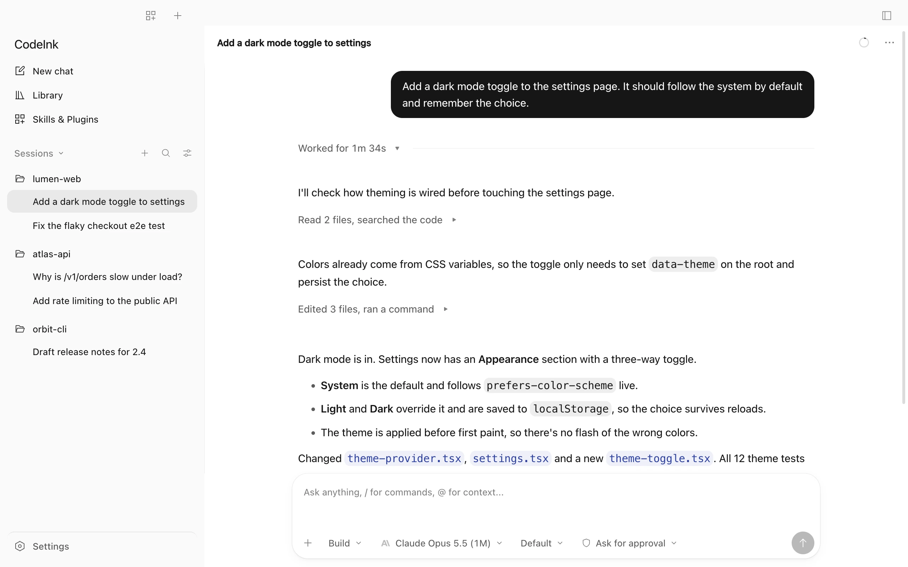
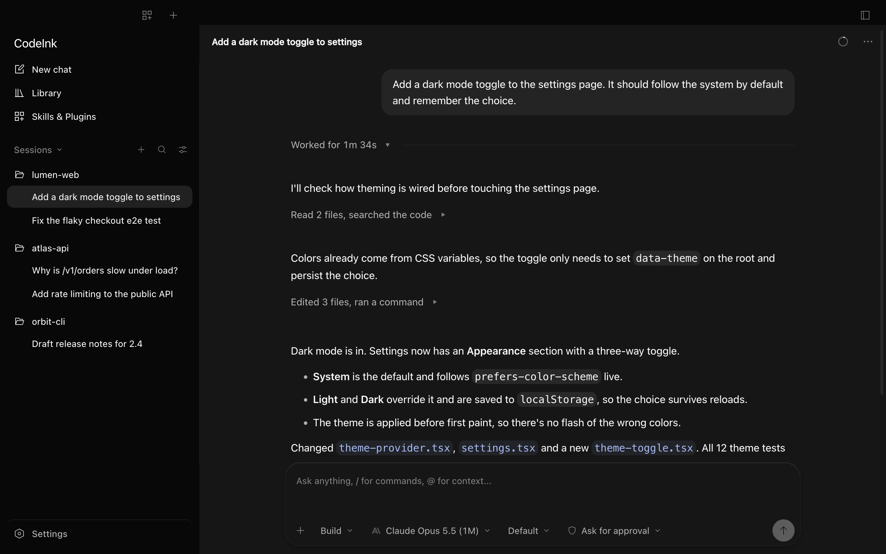
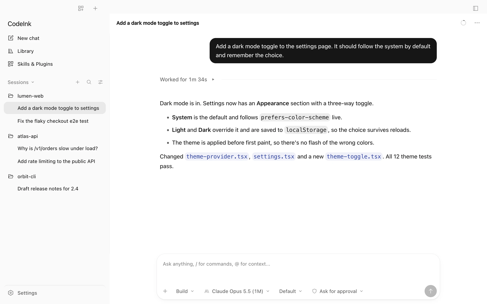
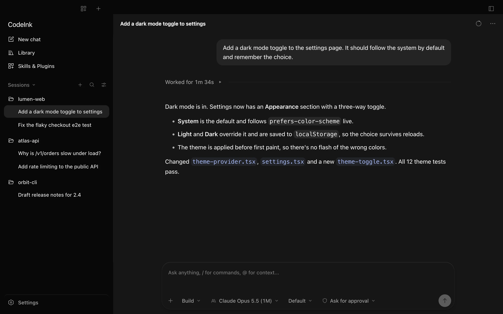
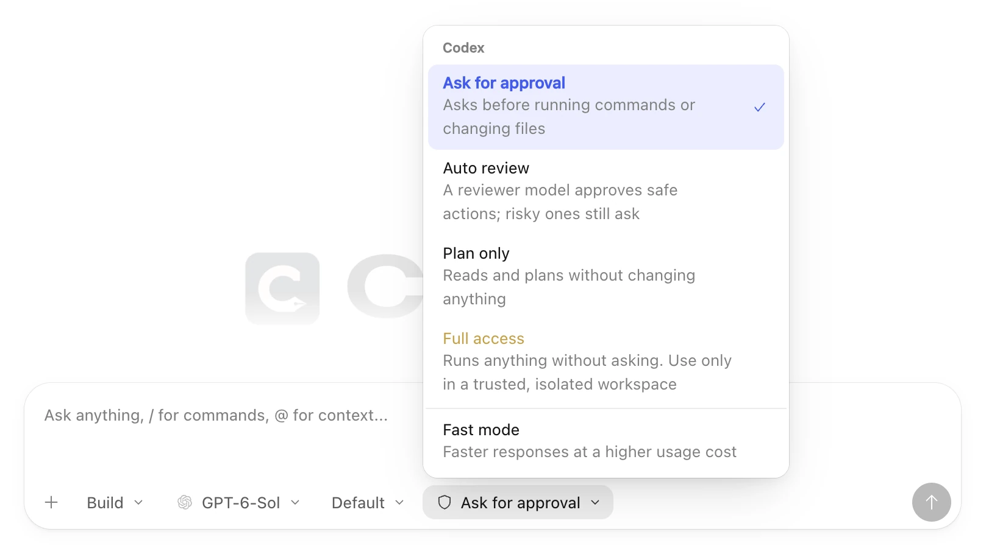
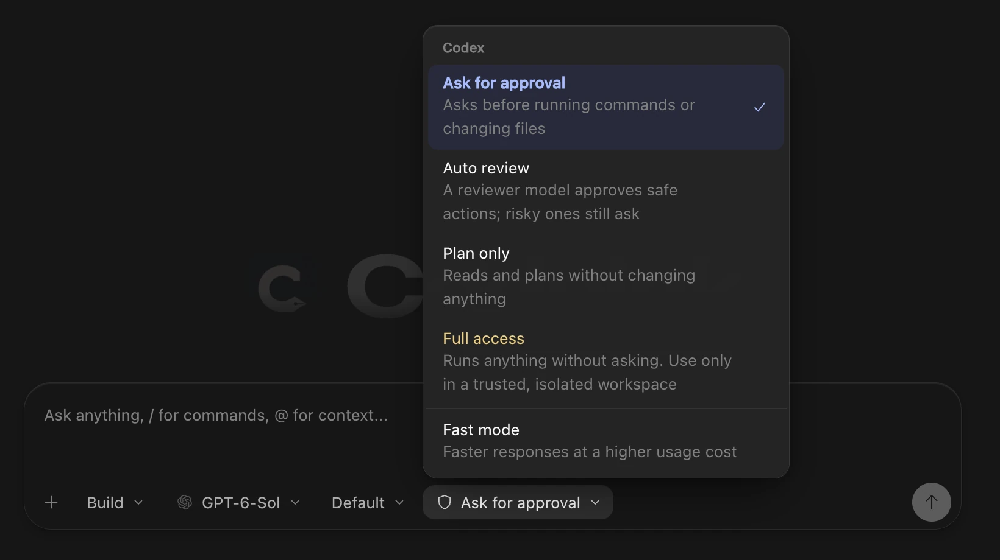

Timeline
The answer, without the noise.
When a turn finishes, every read, edit and command folds into one line: Worked for 1m 34s. Open it whenever you want the steps.


Free and open source · macOS, Windows, Linux
A calm desktop workspace for Codex, Claude Code and the other agent CLIs you already use. Same agents, same accounts, one window.



Timeline
When a turn finishes, every read, edit and command folds into one line: Worked for 1m 34s. Open it whenever you want the steps.


Control
Ask before every action, let a reviewer approve the safe ones, plan without changes, or allow everything. Turn on Fast mode where the model supports it.


Each agent keeps its own sign-in and plan. There’s no CodeInk account.
Sessions are stored locally, and CodeInk doesn’t collect your CLI credentials.
Choose from the models and reasoning levels each agent reports, per chat.
Chats grouped by project in a quiet sidebar, with search and filters.
See what each agent has installed and switch items on or off.
Session and weekly limits for Codex and Claude Code, with reset times.
How it works
Use the agent’s own installer. CodeInk never ships or downloads an agent for you.
Your existing account and plan stay with the agent, exactly as before.
Pick the agent and a model, then follow replies, edits and approvals in one window.